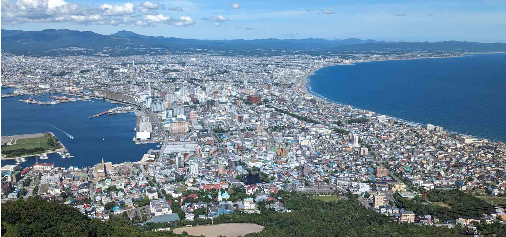
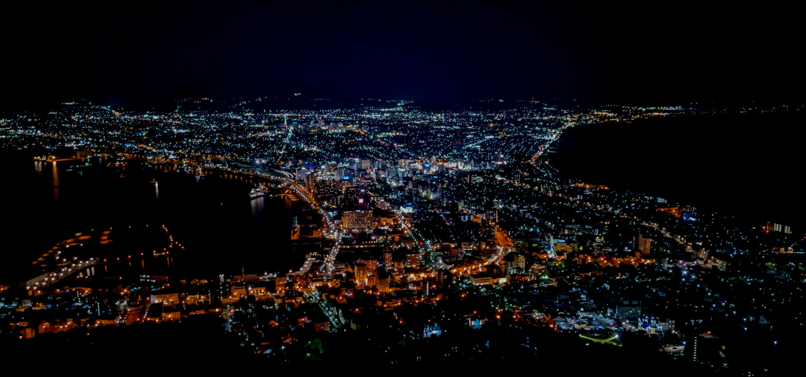
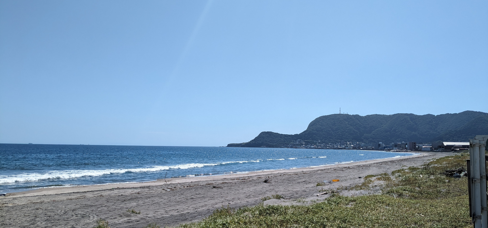

羽田空港から約90のフライトで、そこはもう北の大地です。
函館空港から市街まで車で 約15分。
空港シャトルバスも運行中。
五稜郭から末広町のわずか5kmの間に、函館市役所、中央病院、函館駅、赤レンガ倉庫、住宅街と都市機能が凝縮されています。
日本海と太平洋への出口と、欧米との通商の入り口となった函館は、異国情調あふれる魅力的な街となりました。
太平洋と日本海を結ぶ津軽海峡に面して、豊かな漁場を持ち、物流の拠点となっています。
イカのまちとして知られていて、近年ではブリの漁獲量が伸びて1万トンを超えてきています。
標高334mの函館山には、さまざまな動植物が生息し、また山頂から望む函館市街は絶景です。
江戸幕府が奉行所を設置し、さらに樺太沿岸漁業を開始して、その後昭和まで続く北洋漁業を支える街となっていました。
1859年、横浜、長崎とともに日本の国際貿易港として開港しました。
その後、赤レンガ倉庫や箱館区公会堂など西洋文化を積極的に取り入れた街並みが形成されていきました。
和洋折衷の文化と街並みは今でも多くの人を魅了しています。